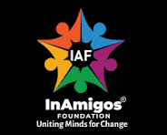
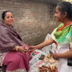
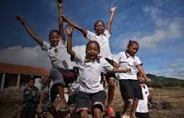
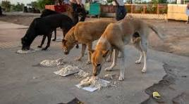
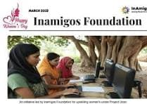
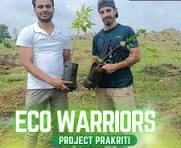
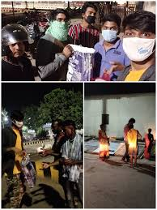

InAmigos Foundation
About InAmigos Foundation
InAmigos Foundation was founded on September 23, 2020, by Mr. Govind Shukla (Founder & CEO). It is a Section 8
registered non-profit organization, licensed by the Central Government. It has its headquarters at Chhattisgarh.
It
holds 80G & 12A certifications, ensuring transparency, accountability and tax-exempt benefits for donors. Our
foundation is also CSR-1 registered, allowing us to collaborate with corporate partners for impactful Corporate
Social Responsibility (CSR) initiatives. Additionally, we are NITI Aayog registered, aligning our work with
national development goals and hold the prestigious IAF ISO 9001:2015 certification, signifying our commitment
to maintain high-quality standards in operations and service delivery.

With a strong network of dedicated professionals, volunteers and corporate partners, we work tirelessly to bring
positive change in society. Our social media platforms actively showcase our impact, keeping our supporters
informed and engaged. At InAmigos Foundation, we believe in the power of collective action. Every contribution
is directed towards essential causes such as food distribution, education, women empowerment, animal welfare,
environmental sustainability and social inclusion programs across India. Join Us in Making a Difference
Together, we can create a more inclusive, compassionate and empowered society.
Our Key Initiatives:
- Project Seva – Providing food and clothing to the underprivileged.
- Project Bachpanshala – Ensuring quality education for underprivileged children.
- Project Jeev – Animal welfare, including rescue, protection and feeding.
- Project Udaan – Women empowerment through skill development and financial independence.
- Project Prakriti – Environmental conservation and sustainability efforts.
- Project Vikas – Enhancing employability through skill development programs.
Project Seva
The core philosophy behind Project SEVA is rooted in the literal meaning of Seva—selfless service. It focuses
primarily on combating hunger, resource scarcity, and clothing insecurity among underprivileged and marginalized
communities across India.
- Core Focus Areas-
- Food Distribution Drive (Nourishing Lives): The project actively targets food insecurity
among vulnerable groups, including daily wage laborers, homeless individuals, slum residents, and
orphaned children. Volunteers organize weekly drives to distribute freshly prepared, nutritious
home-cooked meals and dry ration kits to ensure that those struggling financially do not have to
sleep on an empty stomach.
- Clothing and Blanket Distribution (Spreading Warmth): Recognizing that proper clothing is a
major barrier to health and human dignity, Project SEVA runs seasonal clothing drives. They collect,
sort, and respectfully distribute clean, usable garments, blankets, and footwear. This initiative
becomes particularly active ahead of harsh winter and monsoon seasons to protect rough sleepers and
low-income families from extreme weather.

- Implementation and Operational Strategy-
Unlike massive, detached corporate charity campaigns,
Project SEVA operates through a localized, grassroots approach:
- Community-Centric Approach: Dedicated student interns and professional volunteers work
directly on the ground, interacting closely with beneficiaries to ensure resources reach the most
genuinely needy pockets.
- Reducing Food & Material Waste: The initiative coordinates with events, restaurants, and
individuals to safely channel surplus food and sustainable, gently used clothing away from landfills
and directly to vulnerable individuals.
- Focus on Dignity: The foundation emphasizes that the distribution process must be conducted
with deep respect and kindness, aiming to restore a sense of social inclusion and care rather than
treating it as mere charity.
- Track Record and Social Impact-
Through steady, continuous community action over the last few years, the project has achieved significant
measurable metrics:
- Resource Milestones: Cumulatively, Project SEVA has successfully distributed over 50,000+
meals and clothing items across multiple cities in India.
- Expanding Footprint: The outreach expanded from covering roughly 10 cities in 2022 to over
20+ cities by 2024–2025, steadily growing its network of volunteers and localized distribution
zones.
- Youth Mobilization: By utilizing a large network of virtual and on-ground digital marketing,
social work, and management interns, the project actively fosters a culture of empathy and civic
responsibility among young professionals and students.
Project Bachpanshala
While Project SEVA focuses on meeting immediate physical survival needs like hunger and clothing, Project
Bachpanshala targets long-term generational change by focusing on child welfare and primary education for
underprivileged children. The name beautifully combines Bachpan (childhood) and Shala (school), reflecting its
ultimate mission: protecting the joy of childhood while building bright futures through accessible education.
- Core Mission and Objectives-
The project is built around the philosophy that "no child should be left behind" due to their zip code or
socioeconomic background. Its primary goals include:
- Bridging Educational Gaps: Bringing foundational literacy and academic assistance to children
who lack access to formal schooling or are at high risk of dropping out.
- Holistic Child Development: Moving beyond rote memorization to nurture a child's confidence,
critical thinking, and emotional well-being.
- Cultivating Safe Learning Spaces: Designing welcoming, high-empathy environments where
children from harsh backgrounds feel seen, respected, and safe to express themselves.

- Key Focus Areas and Operations-
Project Bachpanshala implements a grassroots, "learning beyond
walls" strategy to reach children directly in their environments:
- Doorstep and Open-Air Classrooms: To make education truly accessible, volunteers set up
temporary learning centers directly within slum areas, rural villages, and sometimes even under
flyovers or on footpaths for street-dwelling children.
- Foundational Literacy & Tech Skills: Children are taught basic reading, writing, and
mathematics. Crucially, the program also integrates basic digital literacy and essential life skills
to help them navigate the modern world.
- Interactive and Creative Teaching: Recognizing that formal, rigid teaching structures can
intimidate first-generation learners, the foundation uses creative teaching aids, educational games,
workshops, and storytelling to make learning enjoyable.
- Mentorship Programs: Trained student and professional volunteers act as mentors. They provide
personalized care, academic guidance, and emotional support to help children overcome trauma or
hesitation, helping them "stand taller and speak clearer."
- Health and Wellness: The initiative frequently integrates basic health awareness, cleanliness
drives, and healthcare checkups to ensure the children stay healthy enough to learn actively.
- Social Impact and Reach-
By leveraging a massive network of virtual and on-ground youth interns,
Project Bachpanshala has achieved significant, measurable milestones:
- Over 500+ Consistent Beneficiaries: Hundreds of children across underserved pockets in India
have been brought into a structured, foundational learning framework.
- Community Mindset Shift: Beyond the kids, the project actively works with parents and local
village/slum communities through awareness campaigns, emphasizing why educating a child—especially
young girls—is essential to breaking the cycle of poverty.
- Synergy with Project SEVA:The foundation seamlessly integrates its projects. For instance,
kids attending Bachpanshala classes are frequently supported by Project SEVA with seasonal clothes,
winter blankets, footwear, and nutritious food kits.
Project Jeev
While the foundation's other flagship programs focus on human welfare—such as food insecurity (Project SEVA) and
child education (Project Bachpanshala)—Project Jeev extends that same circle of compassion to the "voiceless
souls" of the streets: stray, abandoned, and community animals (primarily dogs, cats, and cattle).
- Core Vision and Philosophy-
The project operates under the motto "In This Life, Save a Life" and
is built upon the concept of peaceful coexistence. It challenges public indifference toward urban stray
animals by emphasizing that a humane society must care for all living beings. The initiative focuses on
three major pillars:
- Empathy over Indifference: Encouraging everyday citizens and youth to view strays not as
nuisances, but as dependent community members needing protection.
- The Ripple Effect: Fostering a culture where one small act of kindness (like feeding a
neighborhood dog) inspires others to do the same, building safer and more tightly-knit communities.
- Reducing Starvation-Driven Aggression: Recognizing that most animal aggression on the streets
stems from hunger, fear, and territorial defense, regular feeding helps make neighborhoods calmer
and safer for both humans and animals.

- Key Areas of Action-
Project Jeev combines daily ground-level sustenance with structured safety
and advocacy measures:
- Daily Feeding Drives: The foundation has a dedicated volunteer network that ensures
nutritious meals are distributed daily to stray animals across urban areas, hotspots, and slum
belts. On average, the project feeds over 50+ stray animals every single day.
- Rescue and Medical Aid: When volunteers encounter sick, malnourished, or injured animals
(such as puppies exposed to traffic or animals suffering from untreated wounds), Project Jeev steps
in to provide essential first aid and coordinates with local veterinarians for proper medical care.
- Makeshift Shelters: During extreme weather conditions—such as severe monsoons or harsh
winters—volunteers construct temporary, makeshift shelters to keep community animals safe from the
elements.
- Sterilization & Vaccination Advocacy: To address the root challenges of stray overpopulation
and public health risks (like the spread of zoonotic diseases such as rabies), the project advocates
for and supports ethical, humane sterilization and vaccination drives.
- Community Sensitization: Volunteers conduct awareness campaigns to educate people, especially
children, about animal rights, safe interactions with street animals, and responsible community
care.
- The Environmental and Social Connection-
An interesting aspect of Project Jeev is how the InAmigos
Foundation links animal welfare to environmental sustainability:
- Waste Utilization: The project encourages utilizing safe, biodegradable kitchen leftovers to
feed stray cattle and dogs, which helps reduce organic waste dumping and, by extension, localized
methane emissions from landfills.
- Public Health: Well-fed and monitored stray populations are healthier, which naturally
minimizes disease transmission risks to humans and keeps local urban ecosystems stable.
Project Udaan
While Project SEVA and Project Bachpanshala focus on immediate survival and primary education, Project Udaan
targets long-term, generational economic change. Its central objective is to give marginalized
women—particularly in rural areas and underserved urban pockets—the "wings" to break free from financial
dependency and limiting social stereotypes.
- Core Philosophy: Economic Self-Reliance-
The project operates under the guiding belief that
empowering a woman financially transforms an entire family and community. When a woman earns an independent
income, she reinvests it heavily into her children’s education, healthcare, and household stability. Project
Udaan acts as an incubator that transitions vulnerable women from financial dependency into confident,
self-sufficient income earners.
- Key Elements of the Initiative-
Project Udaan takes a comprehensive, multi-dimensional approach to
empowerment rather than just providing one-off charity:
- Vocational Skill Development: The foundation sets up training programs in high-demand
grassroots trades. Women are taught practical skills like tailoring, sewing, and crafting local
handicrafts. These skills require relatively low capital to set up but offer immediate
income-generating opportunities.
- Digital Literacy & Future Readiness: Recognizing the needs of a modern economy, Project Udaan
goes beyond traditional crafts to teach essential computer and digital skills. Women are introduced
to basic software (like Microsoft Excel), mobile banking, and digital tools so they can navigate
online banking and safely utilize technology.
- Micro-Enterprise & Entrepreneurship Support: The project doesn’t stop after the training
ends. It helps women establish their own micro-enterprises (such as local boutiques, handicraft
shops, or small home businesses). Volunteers and self-help groups assist them in understanding basic
business management and connecting with local market linkages to sell their goods.
- Holistic Awareness & Rights Education: To build true confidence, the initiative hosts regular
workshops covering:
- Women’s Legal Rights & Leadership: Helping women speak up, make decisions, and
counter domestic or societal oppression.
- Financial Awareness: Teaching budgeting, saving, and microfinance
- Health & Hygiene: Breaking taboos by providing essential education on menstrual
hygiene and reproductive health.

- Reach and Grassroots Impact-
Rooted primarily in Chhattisgarh (where the foundation is based),
Project Udaan has steadily expanded its outreach across other states like West Bengal and Haryana:
- Over 900+ Women Impacted: The project has successfully trained and empowered hundreds of
girls and adult women, helping them rewrite their family destinies.
- Creation of Mentorship Circles: A powerful "ripple effect" model is utilized where successful
alumni of the project stay back to become trainers and role models, inspiring and mentoring the next
batch of women entering the program.
- Starting 250+ Microenterprises: The initiative has directly resulted in the launch of
numerous women-led small businesses, turning homemakers into primary breadwinners.
- Shared Ecosystem Support
Project Udaan thrives alongside the other branches of the InAmigos
family. For instance, the women running micro-tailoring units through Project Udaan are frequently looped in
to help create clothing, uniforms, or materials distributed via Project SEVA or utilized by children in
Project Bachpanshala, making the foundation's social impact beautifully circular.
Project Prakriti
While the foundation's other arms tackle social challenges like hunger (Project SEVA), education (Project
Bachpanshala), and livelihood (Project Udaan), Project Prakriti focuses on climate action, ecological balance,
and nurturing a greener tomorrow. The underlying motto of the project is that every tree planted is a direct
gift to future generations.
- Core Focus Areas and Action-
Project Prakriti approaches environmental protection through a blend
of direct grassroots action and widespread community awareness:
- Massive Tree Plantation Drives: Deforestation and depleting green cover are major
contributors to local climate shifts and urban heat domes. To combat this, the project organizes
extensive tree plantation campaigns across various regions, successfully planting over 20,000+
saplings so far. Volunteers ensure that indigenous tree species are selected to support local
biodiversity, soil retention, and urban microclimates.
- Environmental Literacy & Advocacy: Planting trees is only half the battle; keeping them alive
requires a shift in mindset. The project actively engages local youth, students, and neighborhood
communities in environmental education programs. They advocate for simple, permanent adjustments in
daily habits aligned with sustainable living principles (such as energy conservation, minimizing
water waste, and reducing dependency on single-use plastics).
- Waste Management & Cleanliness Events: Project Prakriti conducts local clean-up drives to
clear plastic pollution and trash from public spaces, parks, and water bodies. Volunteers emphasize
the segregation of recyclable and non-recyclable waste at the source.
- Eco-Friendly Agriculture & Lifestyle Support: The project spreads awareness regarding
eco-friendly agricultural practices and aligns closely with India's national Mission LiFE (Lifestyle
for Environment) framework—urging individuals to make conscious, sustainable daily choices.

- Strategic and Collective Impact-
The project relies heavily on mobilization, turning passive
climate anxiety into active civic responsibility:
- The Youth Network: Utilizing the foundation's immense pool of virtual and on-ground youth
interns, Project Prakriti turns local conservation efforts into social movements. Young
professionals manage digital awareness campaigns, design sustainability toolkits, and spearhead
plantation logistics.
- The Circular Ecosystem Benefit: Within the foundation's framework, Project Prakriti's
sustainability work shares a beautiful overlap with Project Jeev (Animal Welfare). For instance,
community awareness regarding local waste management and organic waste utilization actively helps
reduce hazardous trash dumping, creating safer urban grazing corridors for stray animals and street
cattle.
Project Vikas
While the foundation’s other core branches look outward to directly serve communities in need—such as providing
nutrition (Project SEVA) or primary education (Project Bachpanshala)—Project Vikas turns its focus inward to
high school students, college students, and young freshers. It acts as a massive bridging mechanism designed to
transform raw academic knowledge into professional career skills.
- Core Mission and Objectives-
The literal meaning of Vikas is "growth" or "development." The
project is built to address a major issue in the modern job market: the gap between standard college degrees
and the actual practical skills corporate and non-profit sectors demand. Its primary objectives include:
- Enhancing Employability: Training young individuals in real-world corporate workflows so they
can confidently apply for competitive jobs.
- Democratizing Skill Acquisition: Providing high-quality professional exposure,
certifications, and mentorship to students who may not have the financial means to afford premium
professional training programs.
- Building Workplace Discipline: Instilling essential professional ethics, corporate
communication styles, and accountability early in a student's journey.

- Massive Virtual & On-Ground Internship Framework-
Project Vikas operates largely as an extensive,
highly accessible internship ecosystem. Over the last few years, it has successfully trained over 30,000+
interns across India. The program offers specialized, structured internship tracks across multiple
professional streams:
- Digital Marketing: Interns learn search engine optimization (SEO), social media management,
brand positioning, and online outreach strategies.
- Content Writing & Research: Training in professional copywriting, technical writing,
SEO-optimized blogging, and research analysis.
- Data Operations: Practical assignments involving data management, data entry, spreadsheet
organization, and basic database coordination.
- Finance & Operations: Exposure to basic budgeting, spreadsheet tracking, crowdfunding
mechanics, and financial management principles.
- Social Work & Management: For youth looking to enter the developmental or public policy
sectors, this track teaches on-ground coordination, resource mobilization, and public relations.
- Career-Readiness & Soft Skill Mentorship-
Beyond technical tasks, Project Vikas emphasizes
holistic professional growth through integrated workshops and mentorship sessions:
- Communication & Soft Skills: Intensive focus on corporate email etiquette, verbal
presentation, and interview preparation.
- Critical Thinking & Problem-Solving: Interns are given real-time organizational challenges to
develop their strategic analytical thinking.
- Emotional Resilience: Workshops aimed at balancing professional deadlines, handling
constructive workplace feedback, and building general mental well-being in corporate settings.
- The Symbiotic Non-Profit Model
What makes Project Vikas uniquely brilliant within the InAmigos
ecosystem is its internal cycle of impact:
- The foundation recruits thousands of youth looking for work experience under Project Vikas.
- These interns utilize their newly learned skills (such as Graphic Design, Content Writing, or Social
Work Management) to directly run, market, and manage the logistics for the foundation's other social
projects like Project SEVA, Bachpanshala, or Jeev.
- The youth exit the program with verified certificates, strong resumes, and enhanced corporate
skills, while the underprivileged communities receive structured humanitarian aid driven entirely by
the power of youth mobilization.
Ways to Contribute
The InAmigos Foundation is heavily driven by youth mobilization and community support. Because it is a registered
Section 8 non-profit with transparent credentials (including 80G, 12A, and CSR-1 compliance), individuals and
corporate entities have several structured pathways to get involved.,
You can contribute to the projects
through three primary avenues:
- Volunteering (On-Ground Action)-
Volunteering is ideal for individuals who want to invest their
time and physical presence directly into community welfare.
- Project SEVA: Join local weekend collection and distribution drives. You can assist in
gathering excess clean food from events, packing dry ration kits, or distributing freshly cooked
meals and winter blankets to rough sleepers and slum residents.
- Project Bachpanshala: Step in as a guest educator or weekend mentor. Volunteers visit
doorstep or open-air classrooms to teach basic math, reading, and digital literacy, or organize
creative arts, storytelling, and sports workshops for the children.
- Project Jeev: Participate in localized animal care networks. This involves helping run daily
feeding routes for stray animals, assisting in building makeshift winter/monsoon shelters, or
helping transport injured community animals to local veterinary clinics.
- Project Prakriti: Engage in environmental campaigns by physically planting saplings during
mass tree plantation drives or joining community-led waste collection and public park cleanup
events.
- Internships (Skill-Based Contribution)-
Through Project Vikas, the foundation offers extensive,
structured virtual and hybrid internship programs for high school students, college students, and freshers.
These roles allow you to contribute your skills remotely or on-field while gaining verified corporate
experience.
- Creative and content
- Content Writing: Draft SEO-friendly blogs, press releases, newsletters, and
curriculum materials for Project Bachpanshala.
- Graphic Design & Video Editing: Create impactful visual campaigns, posters, and reels
to showcase the ground reality of Project SEVA or Project Jeev.
- Business &Tech
- Digital Marketing & PR: Manage the foundation's social media presence, optimize
search engine visibility, and run online awareness campaigns.
- Data Operations & HR: Assist in managing database tracking for thousands of
concurrent interns or analyzing resource distribution metrics.
- Social Management
- Fundraising & Outreach: Learn non-profit financial operations by pitching to
potential corporate donors or organizing crowdfunding campaigns.
- On-Ground Coordination: Manage logistics, coordinate with local volunteers, and
supervise resource deployment across different cities.
- Financial and Material Donations
Donations provide the critical baseline funding required to keep
these grassroots operations sustainable month after month.
- Material Donations (In-Kind)-
- For SEVA & Bachpanshala: Donate old but clean and usable clothes, winter jackets,
blankets, footwear, or school supply kits (notebooks, bags, stationery, and books).
- For Project Jeev: Donate pet food, rice, bowls, old blankets/sacks for animal
bedding, or basic veterinary first-aid supplies.
- Financial Contributions-
- Micro-Sponsorships: Direct your funds toward specific project milestones, such as
sponsoring a child’s foundational education through Bachpanshala, funding a vocational
tailoring toolkit for a woman under Project Udaan, or sponsoring a cluster of saplings for
Project Prakriti.
- Corporate Social Responsibility (CSR): Corporate entities can utilize their CSR
budgets to fund large-scale community transformation projects, backed by the foundation's
legal compliance certificates.
- Benefits of Joining InAmigos
- Verified Certifications: All interns and structured volunteers receive official
certificates of completion and letters of recommendation (LOR) based on performance.
- Tax Exemptions: Financial donations made by Indian citizens are eligible for tax
deductions under Section 80G of the Income Tax Act.
- Real Workplace Skills: Interns receive direct mentorship in corporate communication,
timeline management, and cross-functional team coordination.
Join Us
Transform your passion into purpose and become a vital catalyst for grassroots change with the InAmigos
Foundation as volunteer. True social transformation requires a collective effort, and we give you a structured
platform to
drive that impact exactly how you choose. You can build your professional portfolio and gain corporate skills
through our certified, remote internships under Project Vikas; you can step onto the ground to personally hand
out nutritious meals, teach first-generation learners, or protect street animals; or you can financially sponsor
essential resources like education kits, winter blankets, and women-led micro-enterprises—all while securing 50%
tax deductions under Section 80G. No matter which path you take, your contribution leaves an undeniable
footprint on vulnerable communities across India.
Visit inamigosfoundation.org.in or reach out to
support@inamigosfoundation.org.in right now to claim your role in the movement—because a sustainable, empathetic
tomorrow starts with the actions we choose to take together today.